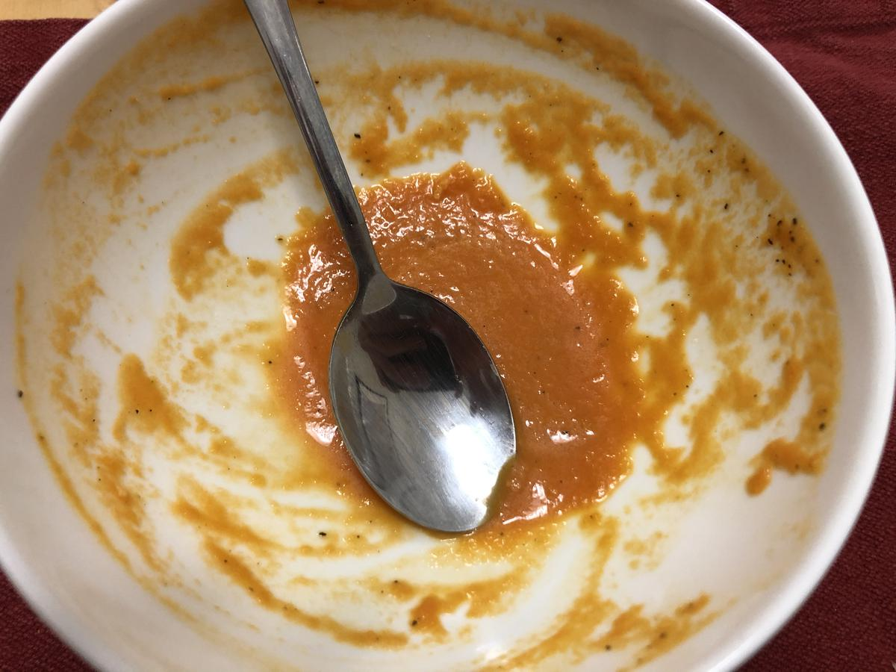

Based on Chrissy Teigen Cravings, pg. 45
Personal rating: 5 / 5

6 Tbsp Olive Oil
2 medium onion, rough dice
8 cloves garlic, chopped
2 (28 oz) can whole peeled tomatoes in juice
2 cup low sodium chicken or vegetable broth
1 tsp sugar
1 tsp pepper
1 tsp garlic powder
1/2 cup heavy cream
Side bread or grilled cheese